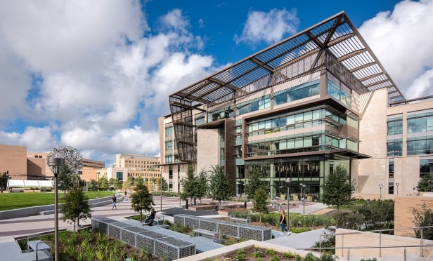
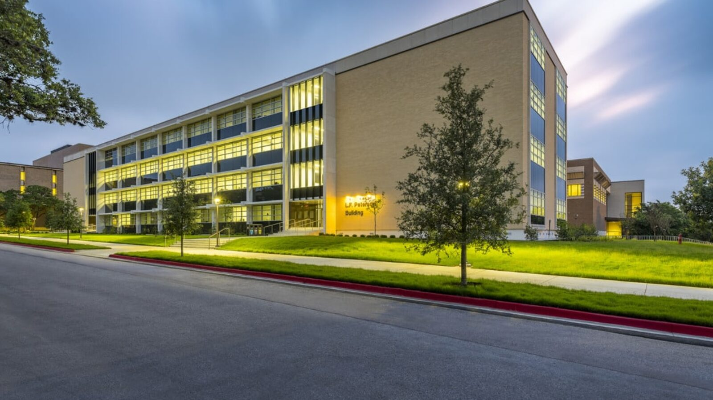
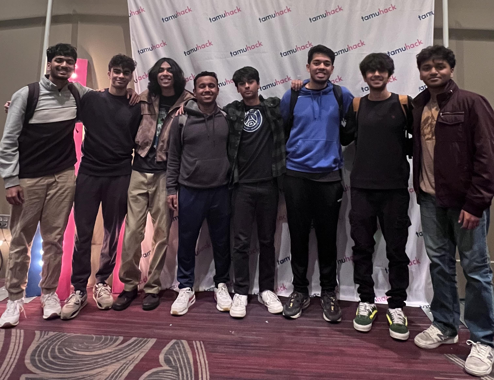
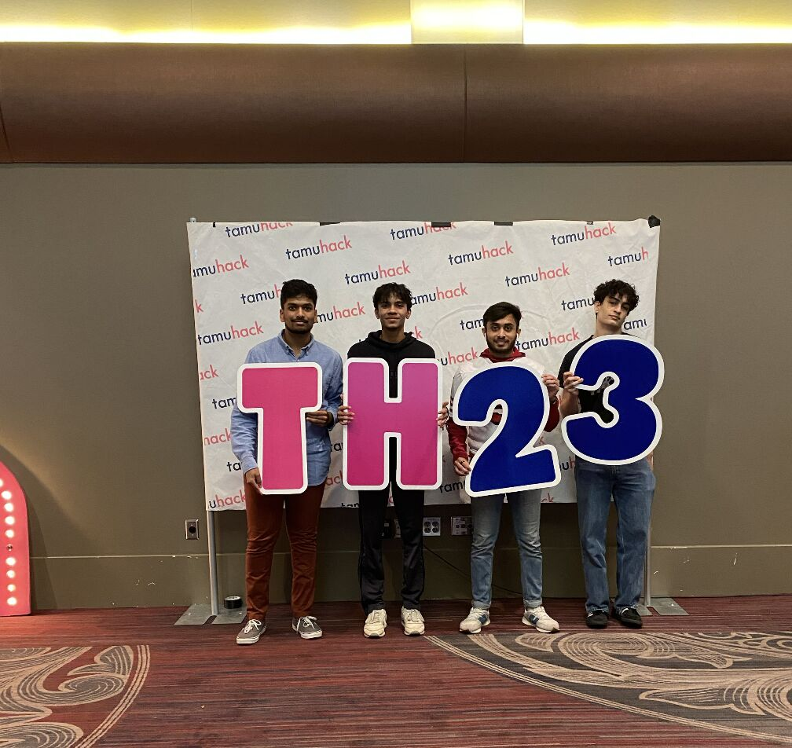

Activities
Research
Machine Learning Research with Professor Ashrant Aryal & The Department of Construction Science @ Texas A&M
The goal is to help the Texas Department of Transportation identify delays and possible roadblocks in various construction tasks ahead of time through the use of Natural Language Processsing and Predictive Modelling. Currently, we are in the process of building a diagnostic tool that abstracts our machine learning model to help identify these roadblocks.
Teaching Assistant

Zachary Engineering Building
As a TA for CSCE 120, an introductory C++ class, I lead a lab section for around 25 students, help grade exams and labworks, and hold office hours. I am part a group of around 25 TAs who oversee all CSCE 120 sections of around 800+ students each semester.
Aggie Data Science Club
Workshops Officer

Peterson Building
As a workshops officer, my responsibilities lie in hosting and delivering machine learning workshops throughout the year on a weekly basis from topics in the range of basic python libraries to neural networks. After following the club for the last two years as a member, I feel that the organization helped shape who I am today through the friends I made and the knowledge I learned. I aim to give back to the community and the organization through my time as an officer.
Hackathons and Competitions
TamuHack 2024

TamuHack 2023

Aggies Invent - Data

4th Place